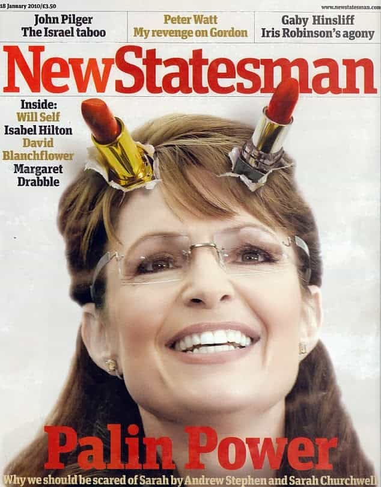
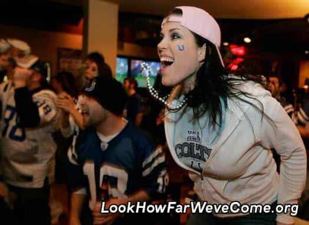

< < < Back
4 More Lies Men Are Being Told About Women – Return Of Kings
Before writing the prequel to this article a couple months back I had a list of close to a dozen lies that Western men are raised to believe about women. The breakdown and explanation necessary to debunk every myth at their core prevented me from putting them all into one article so I whittled my list down to eight, then wrote about the four most Anglo-prevalent. They seemed to be received well so I’ve decided add another installment. That said, here are the next four in line.
“Behind every great man is a great woman”
The definition of a great woman in the ‘sphere differs greatly from the definition of those who coined this falsehood. One of the most glaring examples of this is when women like Michelle Obama and Hillary Clinton are given any measure of credit for the successes of their husbands as Presidents of the United States. It’s amusing how the fem-centric media paints these women as powerful, influential figures in the lives of their husbands as though they are the ones pulling the strings on important decisions regarding foreign policy and military action behind the scenes.
Now don’t get me wrong, Michelle and Hillary do (did) add value to their Head of State husbands but not in the way those who dreamt up this fallacy would lead you to believe. A man who acquires the title and responsibility of leader of the free world (or any other title or accomplishment for that matter) already had what it took to get there whether the public acknowledges this or not. He didn’t need a woman’s influence or guidance to get him there. What he needed was a supportive, quality woman who understood the role of a First Lady and conducted herself as such.
Both Barack and Bill publically benefited from having wives that represented what a woman should be to their powerful husbands because society responds favorably when traditional sex roles (the man leads, the woman follows) and values are evident in our leaders no matter what politically correct notions come out of their mouths. This explains why there hasn’t been a bachelor in the Oval Office in over 150 years.

The traditional family always wins out in politics
Anyone who doubts society’s biological desire for the conventional presentation of a traditional family in public service need only remember the evisceration that Sarah Palin suffered at the hands of the media in 2008. Most Americans will never forget the full throttle character assault that was ramped up as soon as McCain named her as his running mate. Ironically, and not surprisingly, the vast majority of Palin’s stone throwers were women. Hell, some of those female pundits continue to stoke those flames even today and Sarah’s been all but irrelevant on the political landscape since Obama took office in ’09.
Whether or not her husband Todd was the true leader of that family is anybody’s guess but Sarah was perceived to be the head of household because she was the Vice Presidential Candidate, not her husband. Perception is indeed reality and outside of Alaska, Palin continues to be the butt of political satire nationwide simply because of biology.

A year after the election they still couldn’t leave her alone
Men can accomplish great things with or without women. Could the presence of a feminine, supportive woman make his journey more enjoyable and a maybe little more fulfilling? Sure. Julius Caesar and Genghis Khan enjoyed hoards of women while conquering their respective worlds and I’m willing to bet it gave both of an elevated measure of satisfaction knowing they had pussy at the ready at all times. But I doubt either one of them consulted with their harems when faced with a particularly tough decision. So if a woman happens to be along for the ride during a man’s conquests the only greatness he needs from her is her compliance and her body—not her guidance and influence.
“Never ask a woman her age”
Testing a man’s sexual fitness is in a woman’s DNA. There’s no getting around this fact just as there’s no getting around the fact that beautiful, fit women give us boners (the boner test being a man’s way of testing a woman’s sexual fitness). Neither sex can fight its natural instincts as it’s how we are hardwired as men and women.
Females in the Western hemisphere literally run on autopilot with these congruence tests to determine sexual fitness—especially the attractive ones. Playing with her phone on a date, demanding that you buy her a drink, and asking you if you’re gay are just a few things she does on a regular basis without even thinking about why she’s doing them. These, of course, are examples of what are more commonly known as shit tests—a woman’s way of sorting out which men she will use strictly for validation and provisions with zero sex, and those she’ll gladly engage in hair pulling, headboard rattling sex with at the drop of a hat (ahh…the double edged sword of a woman’s duplicitous hypergamy). Men on the other hand have one way of determining the degree of a woman’s sexual fitness…
Physical beauty.
Good looking girls from 18 to 25 years are the most desirable, thus, the most sexually fit. Granted, there are plenty of women who look great well into their thirties but the dwindling attention from the men they want between their legs is a grim reminder that end of the carousel ride draws nigh.
So why must you “never ask a woman her age?”
Because asking a woman’s age is shit testing her. A woman’s fragile ego can’t handle rejection much less having the tables turned and having to prove her sexual worthiness to a male. And because females are the masters of deception and are capable of easily shaving a few years off of their outward appearances thanks to today’s advances in makeup and fraudulent clothing, this forbidden query pulls back the curtain of their carefully crafted attempted to mimic a fertile 22 year old.

Realizing the wall is approaching
The older American female is keenly aware that men with options prefer younger, hotter women. She knows that once a man learns she’s well past her prime age wise, his attraction to her will be substantially diminished. So in order to avoid having to pass the one shit test that men can effectively dismiss them (for potential LTR status) with, they chose to create this imaginary faux pas forbidding men to ask a woman how old she is.
Women can simulate youth and beauty to some extent but deep down they all know that no amount of cleavage, highlights, or ass lifting jeans can reduce the number of rings she conceals within her tree stump. Kick this myth to the curb and ask away gents. Watching her squirm in disbelief that you had the audacity to violate this “rule” is half the fun.
“If She’s a Sports Fan She’s a Keeper”
So we’re back at the bar with our buddies a few days after stupidly toasting the ridiculous Happy Wife, Happy Life maxim when one of our friends starts talking about the “amazing girl” he just met. We all hit him with the usual vetting procedure asking him questions like “Is she hot” “Does she swallow” “What’s her mom look like” and so forth. We’ve all been on both sides of these Q&A sessions. We’ve also heard, at some point, our buddy say something to this effect:
“…and she’s a diehard Giants fan. I think I’m in love!”
The glorification of masculine traits in women continues to destroy femininity at an alarming rate. This line of thinking is so mainstream, dudes actually think that dating a girl who loves sports as much as he does is a bonus. But in an honest moment he’ll admit that seeing her scream at the television because the ref called a penalty on her beloved Giants makes her very unattractive.

This woman is not attractive
Men want women who are women. Girly girls. Being with a chick who can go shot for shot with you on tequila night, brags about her kill streak on Call Of Duty, or can name every pitcher on the ‘93 Padres is grossly overrated.
On the other hand, it is pretty cool when you’re out on a date with a sexy girl and she asks you something about your team in an attempt to connect with you. It shows that she is trying to impress you by taking interest in something important to you. This is a good thing. It’s also perfectly okay if your woman occasionally follows her hometown team and talks about it from time to time. But when she bolts ahead of you at Applebees to grab that seat facing the television so she doesn’t miss the 2nd half of the Manchester United match, game over.
“I wanna marry my bestie”
This is another sad example of Western culture glamorizing trends that go against the very genetic desires of females. So what girls say they want and what they actually need (and want) are two very different things. No surprise there. Case in point: “I want to marry my best friend!”
This maxim, at best, is complete and utter bullshit. I get consistent verification of this when I hold court with my female friends because at some point the conversation always comes to relationships. When this happens I stay silent for the most part (as spitting red pill truth gets you nowhere with either sex) but I’ll drop in a zinger or two to stir the pot when the conversation gets dull or predictable. Listening to those squeaky hamster wheels whir away is always a good time because eventually the word “friend zone” comes up. And when it does, the speaker’s face is almost always etched with disgust, cementing this slogan as a falsity.
A woman doesn’t need a man who consoles her, talks about his feelings, and curls up on the couch with her for a chick flick-a-thon. That’s what her girlfriends are for. What they need is a lover and protector who keeps her grounded by not feeding into her emotional shenanigans, holds frame, and shows as little vulnerability as possible. Girls need to be able to rely on their men to be the immovable object in their lives—their rock. It is impossible to be these things as her best friend. This becomes evident as the marriage progresses as there will be less sex and more arguments which ultimately leads to you being friend zoned (cuckolded) effectively ending the relationship.

Another relationship close to the end because of feeeeeelings
While it’s trendy and chic to proclaim their newly dubbed fiancées as their best friends (or worse, soulmates), unbeknownst to our brothers, those relationships are not long for this world. With each passing tearful conversation over hot chocolate about how she’s suffering “harassment” or “discrimination” at the office, she grows less attracted to him. He would do well to remember that the root word in friend zone is friend and adjust his behavior accordingly with the next girl by not abiding by this misnomer.
In closing…
Disney movies and mainstream media are among the major purveyors of the widespread distribution of the above fables. Understanding what they are and why they exist will go a long way in helping men to rid their minds of these untruths. Learning Game will change a man’s life for the better but scrubbing our minds of the bogus narrative we’ve been fed our whole lives regarding the opposite sex is step number one.
Read Next: 4 Lies Men Are Being Told About Women